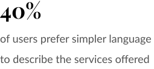
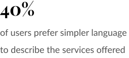

UX Research, Information Architecture, Content Copywriting, UI Design

Northville Rehabilitation Centre is a newly opened rehabiliation clinic located in Markham, ON. They would like to reach a younger demographic, but find it difficult through their current clientele's word of mouth referrals. With over 55% of millenials researching their healthcare online (and finding it just as reliable as a doctor), a website redesign would help them market themselves within their community.
Role: Solo designer
Timeline: 4 weeks
Tools: Figma, OptimalSort, Wix.com
By creating an educational and responsive website, Northville hopes to capture the younger millenial demographic. Revamped copywriting will succintly inform website visitors on available services and their benefits. Coupled with an intuitive informational architecture, website visitors can easily navigate around and make an informed decision about their health.

I had participants complete tasks on three different clinic websites to identify navigation patterns and priority factors when choosing a clinic.
Methods: remote task-based contextual inquiry
Tasks were based on my assumptions of a patient's most frequently asked questions:

Created out of participants' quotes, I used a word map to help me visualize the patterns. The three things to focus on were:
I also created an empathy map as an additional reference of people's expectations.

Four random clinic websites were evaluated for their organization tactics and best practices. I assessed based on the top three factors people considered when choosing a clinic:
Taking a content-first approach, I thought about why people would read the site's information.
People wanted to choose the appropriate type of therapy to book with. In order to accomplish this, they have to understand the offered services.
 

Referencing Mailchimp’s style guide, I focused on answering these questions for an easy-to-understand copywriting. To match the brand attributes, I wrote in a professional and plainspoken tone.
Unfortunately, the competitor analysis showed little on architecture patterns, so I asked participants directly through a remote cardsorting.

I found that people would look for...
During the weekly check-in, I presented various options and the client and I pieced together elements of what would be the best fit for the new layout (shown in yellow boxes).

Finding conditions treated by a service


Booking an appointment


Accepting private insurance
In the first round of testing, I focused on making sure that the task flows were intuitive in my prototype.
My goals were to:
Each round of testing had an affinity map to identify the high priority problems and compare successes.The black boxes around each card represent small wins. The second round of testing showed a 72% increase in black boxes, meaning more wins! :)

Following the feedback identified, I made the following layout changes.


In addition to layout changes, I iterated on the “book an appointment” flow and created a high-fidelity version for testing.
My goals for this round were to:
To improve the booking flow, I noted different points a user would consider booking at, and observed the subsequent steps taken to complete the task. I saw where to incorporate more opportunities for people to book. This was important to conversion metrics and business goals, and this testing showed completion increase of 100%!

People were offput from seeing Northville's royal blue brand color so often throughout the site, and they felt they couldn’t connect with the clinic. In the iterated version (right), I used warmer tones that would complement the brand colour and make people feel more comfortable while navigating an information-dense site. The warmer yellows and blues also helped instill brand trust for the clinic.
The site is still continuously being updated, so live site may not appear the same as the frames below.

Overall, I loved returning to the healthcare industry through a design lens to improve the patient experience.
UX Research, UX/UI Design